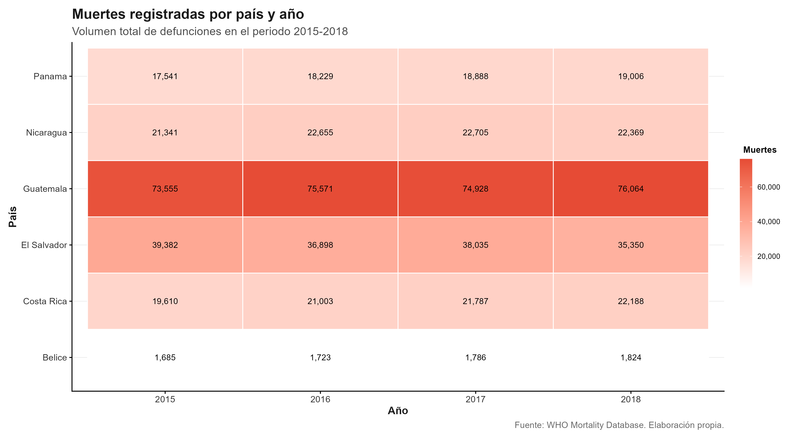
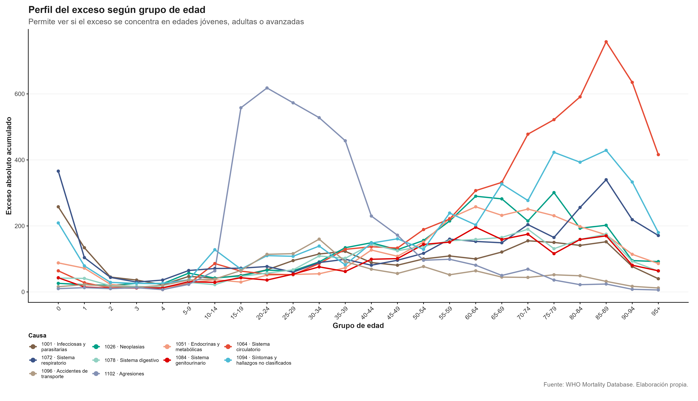
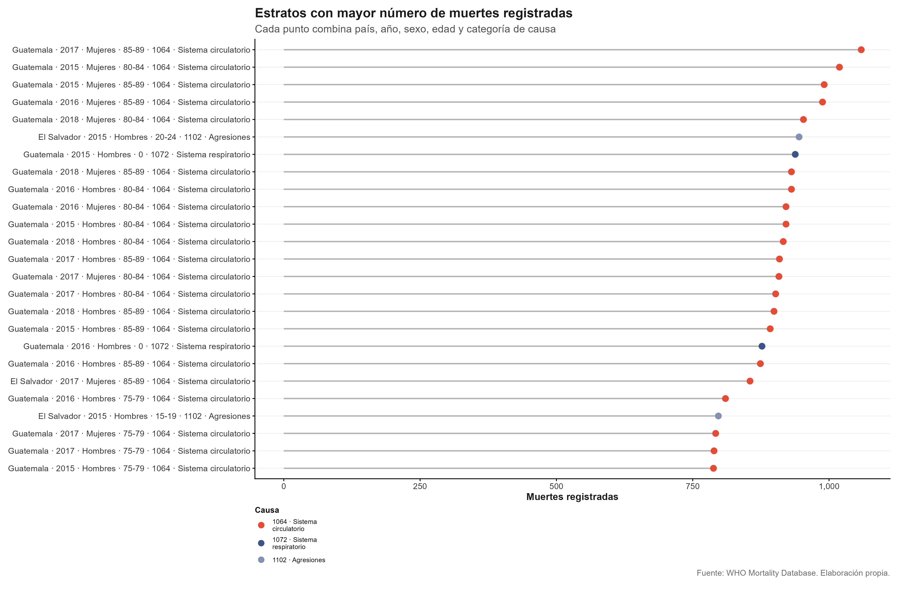
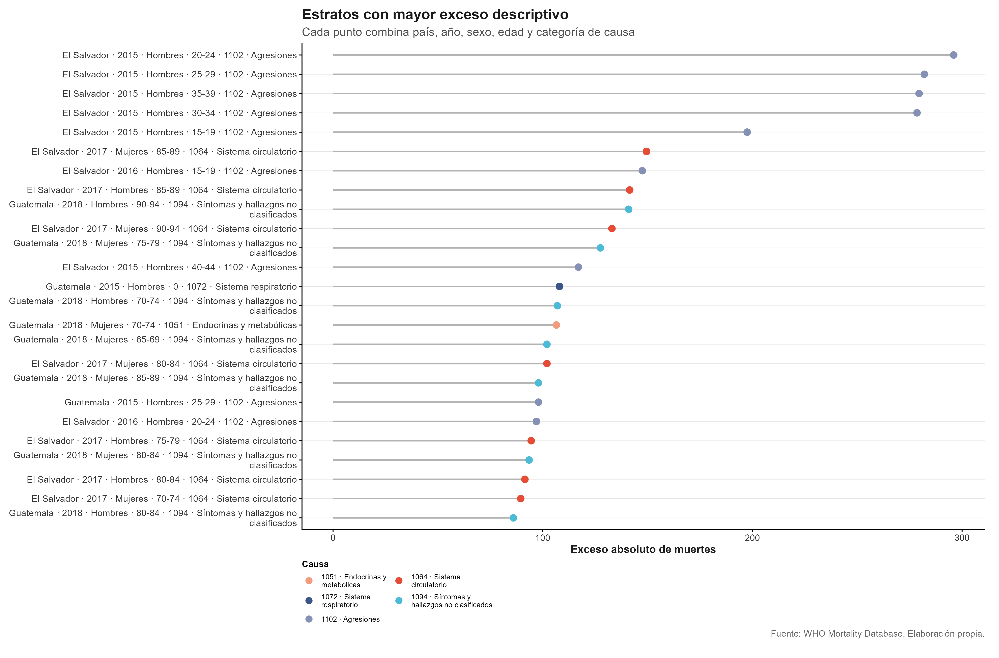
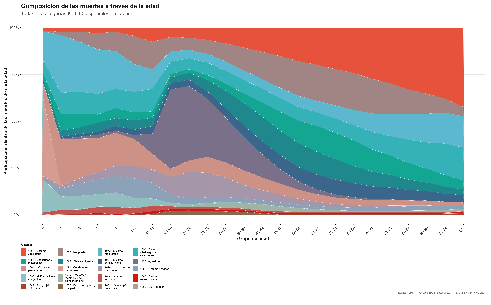

| Categoría principal | Nombre en la base |
|---|---|
| País | Pais |
| Año | Year |
| Sexo | Sex |
| Grupo de edad | Deaths1–Deaths26 |
| Causa de muerte | Cause |
| Número de defunciones | Deaths1–Deaths26 |
Análisis del cambio de la probabilidad de decremento
\({}_n q_x^{(c)}\)
para grupos etarios por causas de muerte de acuerdo con la clasificación ICD-10 en países de Centroamérica, 2015–2018
Kevin David Calderón Martínez
Gabriel de Jesús Chaves Esquivel
Benjamín Gutiérrez Padua
Sebastián Miranda Ramírez
CA0303 Estadística Actuarial
Profesor Maikol Solís
Universidad de Costa Rica
I - 2026
PREGUNTA DE INVESTIGACIÓN
¿Qué patrones de variabilidad se pueden estimar en la probabilidad de decremento
\({}_n q_x^{(c)}\)
por categoría de causas de la ICD-10 en países centroamericanos durante 2015–2018?
Base internacional de mortalidad por causa, edad, sexo, país y año.
| Categoría principal | Nombre en la base |
|---|---|
| País | Pais |
| Año | Year |
| Sexo | Sex |
| Grupo de edad | Deaths1–Deaths26 |
| Causa de muerte | Cause |
| Número de defunciones | Deaths1–Deaths26 |
Tabla 1: Significado de las columnas de la base de datos. Obtenido de: World Health Organization (2026).
Clasificación internacional de enfermedades y causas de muerte utilizada para codificar y organizar las defunciones.
| Primer carácter (Letra) |
Demás caracteres (Números) |
Enfermedad |
|---|---|---|
| A-B | Ciertas enfermedades infecciosas y parasitarias | |
| A | 00-09 | Enfermedades infecciosas intestinales |
| A | 00 | Cólera |
| B | 00-09 | Infecciones virales por lesiones de piel y membrana mucosa |
| B | 00 | Herpes simple |
| B | 001 | Dermatitis vesicular herpética |
| B | 04 | Viruela del mono |
Tabla 2: Ejemplo breve de la clasificación de enfermedades de acuerdo al ICD-10. Elaboración propia.
Los registros no corresponden a edades individuales, sino a grupos etarios: 0–4, 5–9, …, 50–54.
Definimos Dx,t(c) como el número de defunciones observadas en el grupo etario x, año t y causa c. Este valor es una v.a
\[ D_{x,t}^{(c)} \mid \mu_{x,t}^{(c)}, E_{x,t} \sim \operatorname{Poisson}\!\left(E_{x,t}\mu_{x,t}^{(c)}\right) \]
\[ \mathbb{E}\!\left[D_{x,t}^{(c)}\right] = E_{x,t}\mu_{x,t}^{(c)} \]
El número esperado de muertes depende de la exposición poblacional y de la fuerza de mortalidad por causa.
Medida de exceso
\[ \begin{gathered} \max\left(D^{(c)}-\tilde{D}^{(c)},\,0\right) \\[0.55em] D^{(c)} \ge 1.2\,\bar{D}^{(c)} \end{gathered} \]
\[\tilde{D}^{(c)}\] representa la mediana de las defunciones agrupadas correspondientes a la misma causa (c).

PERFIL DE EXCESOS

ESTRATOS DE MAYOR NÚMERO DE MUERTES Y EXCESOS


El exceso más fuerte no necesariamente coincide con el mayor número de muertes registradas.
IMAGEN QUE CUENTA LA HISTORIA

CONSTRUCCIÓN DE LA PROBABILIDAD DE DECREMENTO MÚLTIPLE
Tasa central de mortalidad por causa
\[ {}_n m_{x,t}^{(c)} = \frac{ D_{x,t}^{(c)} }{ {}_n L_{x,t} } \]
\(D_{x,t}^{(c)}\): defunciones observadas por la causa \(c\).
\({}{n}L{x,t}\): exposición al riesgo, aproximada mediante años-persona.
Probabilidad de decremento múltiple
\[ {}_n q_{x,t}^{(c)} = \underbrace{ \frac{ {}_n m_{x,t}^{(c)} }{ {}_n m_{x,t}^{(\cdot)} } }_{\text{participación relativa de la causa }c} \; \underbrace{ \left( 1-e^{-n\,{}_n m_{x,t}^{(\cdot)}} \right) }_{\text{probabilidad de morir por cualquier causa}} \]
Bajo fuerza de mortalidad constante dentro del intervalo, la probabilidad de decremento por causa se obtiene ponderando la intensidad relativa de la causa por la probabilidad total de muerte.